- 
- iPhone Instructions:
- Step 1. Click on the link to the pingtone.
- Step 2. Mail the link of the pingtone to your email address and download it to your computer.
- Step 3. Import the pingtone into your iTunes Ringtone folder and sync your iPhone with your computer.
- Or go to www.eastonbaseball.com/power to download the pingtone.